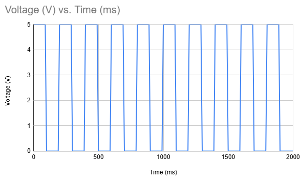

Here is all the documentation for assignment 4!
Here is a picture of the schematic used to make the circuit.


Note: TinkerCAD did not have an alligator clip, there should be one connected to the 10 M resistor leg to a metal object.
A 10MΩ resistor was used for the capacitive sensor because I desired a quick sensitivity for my sensor. If I had used a 100MΩ resistor it may dampen the current too much and result in a delay in response. I used a 330Ω resistor was used to limit the LCD power and precent damage. A LCD display needs 3.3V to turn on According to the Arduino forum a LCD backlight draws 20mA To find the resistance we can use Omh's law: 5V - 3.3V = 1.7V Excess that needs to be absorbed by the resistor 1.7V = 0.020 A * R R = 85Ω
Here is a picture of the circuit used in Libraries!

Here is a GIF of Libraries! in action. A phone camera was not able to pick up the LCD display under many different types of light and video editing. The touch count is increasing.

Here is the code used for Libraries!
// A4 Libraries: This code will count the number of times the metal end of a capacitive sensor was touched and record it to a LCD display.
// Library code for LCD
#include
//Capacitivesensor library code
#include
// Initialize the LCD with the pin numbers
LiquidCrystal lcd(12, 11, 5, 4, 3, 2);
// Set the capcitive sensors using the capacitive library to pins 9 and 8, 8 is input 9 is output
CapacitiveSensor cs_4_2 = CapacitiveSensor(9, 8);
// Initializes the count for number of touches detected
int count = 0;
// Boolean variable to track whether the object was previously touched, this will prevent increases during the same contact
bool letGo = false;
// Sets the threshold for touch read serial monitor to 400
int readLimit = 400;
// Variable to limit how many consecutive readings must be above the threshold to confirm a touch
int duplicate = 3;
// Starts setup
void setup() {
// Initializes the LCD with 16 columns and 2 rows
lcd.begin(16, 2);
// Prints "Touch Count:" to the LCD display
lcd.print("Touch Count:");
// Sets the serial monitor to 9600 baud rate
Serial.begin(9600);
}
// Begins loop
void loop() {
// Sets the position of the blinking cursor to be at position (0,1) on the LCD
lcd.setCursor(0, 1);
// Sets the sensitivity of the sensor to be low. Less readings are being taken and averaged = lower sensitivity to touch
long serialRead = cs_4_2.capacitiveSensor(20);
// Prints the sensor reading data to the serial monitor
Serial.println(serialRead);
// Initializes the number of touches to the metal object
int touchCountSerial = 0;
// if statement where if the value being read by the capacitive sensor is higher than the readLimit of 400, then add a value to touchCountSerial
if (serialRead > readLimit) {
// Increase the touchCountSerial if serialRead is higher than limit
touchCountSerial++;
}
// else statement where if serialRead is lower than limit, set the touchCountSerial to zero
else {
// touchCountSerial is zero if lower than limit
touchCountSerial = 0;
}
// Begins an if statement where if touchCountSerial is greater than or equal to duplicate and letGo is false (indicating a new touch)
if (touchCountSerial >= duplicate && !letGo) {
// Increases the value of count
count++;
// Clears the previous value to place a new one
lcd.clear();
// Prints the statement "Touch Count:" to the LCD display
lcd.print("Touch Count:");
// Move the cursor of the LCD to the position (0,1)
lcd.setCursor(0, 1);
// Print the value for count
lcd.print(count);
// Sets letGo to true to prevent multiple increases during one touch
letGo = true;
}
// Else if statement where if serialRead is less than 400 (readLimit - 200), reset letGo to indicate absence of multiple touches
else if (serialRead < readLimit - 200) {
// letGo becomes false to show absense of duplicate touches
letGo = false;
}
// 100 ms delay for each reading
delay(100);
}
Additional Questions
Question 1: Say you are using a servo motor you attach to pin 9. In your loop() you have the following code:
for (int i=0, i<180, i++){servo.write(i); delay(100);}
Draw a graph with the X axis in seconds, for two seconds, and the y-axis the voltage at pin 9 with respect to ground.

Question 2: Your input device is slightly broken, leading it to give us an erroneous reading 1% of the time. How can we address this? Answer in (pseudo)code.
If our input device is slightly broke and giving us an erroneous reading 1% of the time we can fix this by creating a threshold for readings.
For example, in my circuit if a serial value is above 400 then the output will execute, if my device was randomly sending one or two
values above 400 when it is not supposed to we can accomodate to that by increasing the number of times a high value needs to be recorded to
initate the output code.
Pseudocode:
// Initalize the number of continuous readings needed to execute as 3
serialReading = analogRead(sensorPin);
threshold = 3;
serialThreshold = 500;
displayCount = 0;
//If the serialReading is higher than 500 add one to the serial count to check against threshold.
if (serialReading > serialThreshold ) {
count++;
} else {
count = 0;
}
//If the serial count is higher than the threshold (confirming a touch that isn't a fluke) then add to the display/output/run the output
if (count >= threshold) {
displayCount++;
Serial.println(displayCount);
}
Question 3: Your input device is slightly noisy, leading the measurement to randomly deviate from the true measurement up or down by 10%. How can we address this? Answer in (pseudo)code.
If our input device is deviating from the true measurement by 10% we can fix this by averaging the readings from a large time period.
This will help smooth the deviations, we can then use the averages in our output calculations.
Pseudocode:
1. Find the sum of the readings
serialReadings = analogRead(sensorPin); // analogRead the sensor
sum = 0; // Initalize the sum value
averageLimit = 10; // Set the number of counts per round to be 10, will be used as the denominator in average equation
for (int i = 0; i < averageLimit; i++) {// for each serial reading that is not above the 10th one, add them together
sum += serialReadings; // Add together the sum of the previous reading to the most recent one
}
2. Find the average
average = sum / averageLimit; // Average equation
Serial.println(average); // Print on a new line